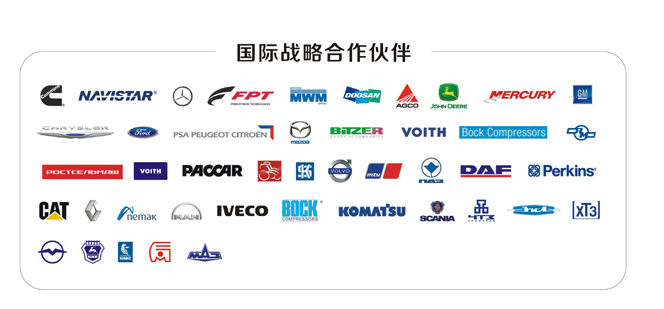

Supply the OEM services for the Ford, General Motors, Mercedes-Benz, Volkswagen, Cummins, Fiat, Navistar, Nemak and other internationally renowned automotive and engine companies.
Establish strategic cooperative relationships with domestic high-end automobiles and engine companies such as China FAW Group, Dongfeng Group, SAIC Group, CNHTC Group, Yituo Group, Weichai Power, and Yuchai Group.
Develop the all-round technical cooperation with the AVL, Mato and other world's top engine design companies for the cutting-edge technology research and development in the key components of engine.
Conduct Synchronous R&D with global engine technology upgrades and provide forward-looking, personalized technical solutions.
Develope the technical, market, and financial cooperation with the GKN which is the UK's second-largest engineering and technology producer and Germany's Rheinmetall GmbH Automotive Division, which is the world's leading piston company and deploy the international automotive and engine parts market.
ZYNP has the share of 15% in the international market, including North American diesel engine market share of 30% and gasoline engine market share of 25%.